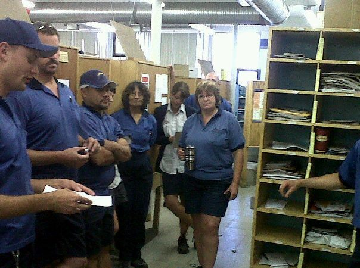

Free Parking
Submitted on Mon, 01/18/2016 - 10:17pm
By Phineas Gage - Recomposition, January 7, 2016
 Ike and I walked into Sam’s office at exactly ten in the morning. Not a minute before or after. We never talked to management, especially the Labour Relations guys, with less than a pair present. Sam ran the video on his computer screen for us to look at. It was a clip of a woman walking at night towards a door. She looks over her shoulder and a shadow glides towards her, she lunges for the door and struggles to open it with the key card. Then a leg that ends with a bicycle pedal and two wheels drifts into plain view and off camera. She opens the glass door and then slams the door behind her and leans on it, panting. The clip then looped and played over again.
Ike and I walked into Sam’s office at exactly ten in the morning. Not a minute before or after. We never talked to management, especially the Labour Relations guys, with less than a pair present. Sam ran the video on his computer screen for us to look at. It was a clip of a woman walking at night towards a door. She looks over her shoulder and a shadow glides towards her, she lunges for the door and struggles to open it with the key card. Then a leg that ends with a bicycle pedal and two wheels drifts into plain view and off camera. She opens the glass door and then slams the door behind her and leans on it, panting. The clip then looped and played over again.
“So, in the investigation, you told the sister that you think the union put her up to this?” I asked.
I was starting to feel a keen rage swelling up inside of me but I grabbed the arms of the chair tightly and tried to keep my cool.
Sam’s face was like cold stone.
“It’s too convenient. You guys start complaining about the health and safety at the Transportation yard and all of a sudden someone almost gets ‘attacked’ in the yard?” He was doing the scare quotes with his fingers.
The video clip completed another loop.
I could feel my anger at the situation starting to effect my judgement. He was probably egging me on.
“I don’t think this is staged Sam. I mean, really, all things being equal, what is more likely: a confrontation with someone at night outside a downtown workstation or an elaborate conspiracy to put a show on for the cameras?” I was smiling and trying to insert some humour into the situation.
The clip completed another loop.
I could feel a light stinging sensation on the back of my thighs as soon as Sam started to talk again. The hairs on my arms were starting to stand on end.
“What are you laughing at? This isn’t funny. See, this is his problem, Ike, he doesn’t take this stuff seriously.” Sam was dripping with condescension. That and cologne.
I shot out of my chair, like a bullet, and leaned over his desk stuffing my index finger into the space in front of his chest. I could see Ike’s eyes go wide as my one arm stretched out towards him, my index finger stopping just shy of his chest. ‘Never, ever, touch them, Phineas, especially when angry’, I told myself.
“You’re fucking lucky all I’m doing is laughing, you dickhead. A woman almost got assaulted in your parking lot and your first response is to spin an insane conspiracy theory about performance art in front of surveillance cameras? What kind of piece of shit sociopath does that?”
I regained composure and looked at Ike.
Ike nodded and said, “I think that is about as of thorough an exploration of the issues we are going to get today,” He gently grabbed my arm and we walked out.
Agitation
Toni was putting her scanner in the cradle when her co-worker Deb walked up to her. While the scanner downloaded her work information for the day she asked Deb about her kids. Outside you could hear the sound of the forklifts backing up as they unloaded the parcels for the day in the Transportation department.
“They’re doing real good. Tim gets home earlier than I do these days so he picks them up from school, so we got that problem solved. How about you?”
Toni shrugged. “Okay. Ever since the lockout ended last June money has been tight. I think we’re just getting a handle on things now. I swear to God, one more meal with fish sticks and my oldest is gonna lose it!”
“I hear you, I thought we were on thin margins before the strike but it’s been tough”. Deb started walking towards her mail truck on the loading dock.
Toni followed her out onto the dock and kept talking. “Yeah, I called the union office about those days of pay we lost during the lockout and how long the grievance was going to take to get that money. Gotta admit Ike just didn’t sound like himself, he was really short with me.”
Deb shook her head and replied: “That damn back to work legislation. It’s scary but could you imagine being a union full timer right now? One walkout and they could take your house.”
Deb nodded. “No wonder contract negotiations are going so badly. They have us over a barrel”.
Deb was at her truck now and turned to wish Toni a good day. This was her last chance to do it in person so she kind of half blurted out her question, “Hey Deb, look I’m really worried about where things are going since the lockout and I was wondering if we called a coffee break meeting to talk about some issues if you could come?”
Deb smiled, but her arms held her truck book to her chest tightly and you could tell she was nervous. “What issues are you talking about?”
Toni felt the question was a good sign even if her body language looked guarded. “A bunch of us are really worried about the woman who got attacked on night shift. She works in this building and we have to walk five blocks through the neighbourhood to get to our cars. It’s going to be getting dark early and lots of the sisters are really on edge about it.”
Deb nodded and said “We gotta talk about that, you’re right, I just don’t think there is much we can do about it.”
Toni sighed, “You might be right but we at least have to try”. Deb nodded and pulled down the sliding door on the back of her truck.
Coordination
Crystal came in smelling like cigarettes and sat down next to Toni. Toni looked at me sideways and waved her hand in front of her nose as she scrunched it up behind her while Crystal had her back to her. I sighed and shrugged. In came Rachel, Sheila, Christine and a few others. At this point, after the lockout, our committee was entirely women, aside from me, with Keith and Pete stepped back but wished us well and Ike having all his time filled up with the various health and safety issues around the local.
Crystal led off: “Depot Two is really concerned about parking. We saw the floor plans from the Postal Transformation team and almost all of the parking is going to be taken up by the new trucks. We’re out in an industrial park and it’s hard to compete for spots on the street with all the machine shops and warehouses.” Everyone nodded.
She continued, “I’ve also been talking to Toni down at Transportation and she said it’s an issue there as the MSCs have to walk five blocks through Boyle Street[1] before sunrise or after dark to get to work. What’s worse a sister in PDSL[2] on the night shift got attacked right outside Transportation on her way to work.”
Crystal then nodded to Rachel who picked up where she left off. “We are also really worried about parking at the postal plant. They have started putting the new additions onto the building and it looks like we won’t have nearly as much parking, as the additions to the building are being put on our old parking. Finally, at the Offsite, we have trouble getting parking before all the big warehouses fill the lot up, it’s a lot like Depot 2 actually”.
I was keeping stack as people raised their hands.
“Okay, we checked the other depots and it doesn’t look like it is as big of an issue with the others,” added Sheila.
I pointed at Toni, “It looks like we have a pretty good issue to try and bring the whole city together again. Five workplaces is close to a third of the workforce and close to a thousand members.
Crystal put her hand up again, I nodded to her, “Okay, I move that we call a city wide shop stewards meeting for just before the next General Membership meeting”. Sheila seconded.
“Any opposed?”, we always asked for opposed opinions first so no one felt pressured to go against a strong ‘yes’ vote.
Silence.
“All in favour?” all hands went up. I smiled, “Motion carried, looks like we are back in business”.
I put in my two cents, “Okay in the lead-up to the meeting I think we should do something small, just to get the buzz out.”
Rachel shrugged, “How about a petition? That will get people paying attention”.
I nodded, “Sure, anyone want to put it together?”
Crystal spoke out of turn, laughing and pointing a pen at me, “Yeah, you do, you’ve been coasting this whole meeting Mr. Chair.” The room laughed.
While the campaigns were direct action-based we wanted to know the legal context these actions were happening in. In this case, there was contract language that governed parking but it was only a requirement for parking to be provided if a new building was constructed. In all of these cases an old building was being renovated. In Downtown this was especially bad because it meant that many of our members had to walk a half dozen blocks to the Transportation yard, where the maintenance crew worked, or pay thirty dollars per day for parking. After we ran the issue by the grievance department and the Local President we were told roundly not to take on the issue.
We sent the text announcing the all-city meeting before the next General Membership meeting as soon as we knew we didn’t have a case through grievances. All the better, we figured, that would keep the official union out of it. Things were tense between everyone all the time. This campaign was becoming the only outlet for the helplessness we felt under the back-to-work legislation. As soon as the text went out we emailed out the petitions and people from the depots printed them off on the sly and started circulating them in the affected workplaces.
Opening Shots
Toni and I sat down on mail tubs outside the break room and started splitting up copies of the petitions and clip-boards together. The deal was she would hit people on their way out in the morning, as she had an earlier run than me. I would get people coming back in at the end of the day, as my run ended later. We all had staggered starts, some people started at 9:53 or 8:35, and we all finished at different times too. This meant the approach of getting everyone together, or just walking down the aisles like the organisers did in the letter carrier depots, wasn’t going to work.
After we split up Toni ran into Deb while docking their scanners again, “Hey Deb, we’re having a meeting next Sunday to talk about some of the issues around parking, think you can make it?”
“Maybe? I dunno, it’s pretty busy.”
Toni shrugged. “I bet! Well look, how about you sign this petition about the issue and I’ll keep you posted?”
Deb took the clipboard from Toni’s hands and started signing. A supervisor came around the corner just then and stopped. He stared at them for a second and immediately walked to the Superintendent’s office. Deb finished signing, looked at where the supervisor was standing, sighed, shrugged and headed towards her truck.
That evening, I returned from clearing my letter-boxes and set to work walking up and down the dock collecting signatures for the petition.
As the page filled up, I started to work my way over to the counter where I turned in the money I collected that day. Sharon was working the counter. I smiled when it was my turn and turned on the charm. “Hi Sharon, want to sign the petition?”
She was tense, she feigned a weak half-smile in return. She was also no dummy and on the local executive. She didn’t make her opinions on our organising a secret. “Yeah I heard about that, you know they told you that we don’t have a grievance, right?”
“Yup. That’s why we are circulating a petition. Maybe pressure from the floor can get some resolution on this issue where the contract can’t.”
“Right. Look, Craig is the chief steward for this department, you’re supposed to ask permission”.
She handed me my change and I just shrugged, smiled again, and left.
Different Terrain
Sheila stood up in the cafeteria at the main postal plant and clapped her hands a couple times. She then began to talk as loudly as she could over the televisions’ din until someone then stood on a chair and turned them off. About half the room looked up at her, the other half kept reading their magazines or playing with their cell phones.
“Parking is already getting too cramped and it’s only going to get worse with the modern post renovations to the plant. The plans show that the new parcels section is going to take up half the parking on the east side of the building.”
The half of the crowd that were paying attention seemed to agree with what Sheila was saying and the rest of the room was paying attention now.
“A lot of us are forced to park on the other side of 170 St. where there are almost no cross walks. It seems like once a week almost we have a near miss. When the Local Executive approached management about lobbying the city together for a crosswalk, they wouldn’t even do that!”
Well, that got the blood flowing. Folks hands shot up and all sorts of people had suggestions on how to deal with the problem and pressure management to make more room for employee parking.
When Sheila sat down to get back to her cafeteria food she saw the meeting at the Offsite went just as well[3]. The text on her phone read: “Close to 100% participation at Offsite. Planning next stage of escalation.”
Across town, on the same morning, Crystal got Pete to help her work the rows to say they were having a brief information meeting. When the time came everyone from the depot gathered in one of the open areas for staging the steel cages the mail was shipped in. Pete quietly went to the back of the room and listened.
“Soon most our footwalks are going to be gone and we will all be in mail trucks. Those trucks are going to park where we are parking right now”.
“Where are we going to park?” a loud, heavy set middle-aged man from the crowd shouted.
‘Management said we can park on the street”. Replied Crystal. “All one hundred of us can park in the twenty or so empty spaces out there”. Everyone in the room grumbled, snorted, or swore.
Crystal nodded.
“Well, what are we gonna do about it?”
“We want to have a city-wide meeting next Sunday to get everyone together to talk about the problem.” said Crystal.
At each of the five workplaces the approach was slightly different. With staggered work times in Transportation, meetings had to happen on the workers’ own time. So we had to make sure we could organise as few meetings as possible. Our tactics also had to rely on the workers doing more on their own, as the work itself was less group-oriented. This meant we had to watch management closely to measure our effectiveness. It was a constant game of battleship where we would try something and only know if we were exerting pressure if they gave away some anger or frustration. Management would never tell us if something was effective, we had to watch for other signs. Things like supervisors going on stress leave, or spurious discipline over small issues were an indication that they were getting hot under the collar. Management constantly tried to make it appear that everything was proceeding as if no pressure was being applied.
In the Plant and Offsite, we had an almost captive audience. Presentations were made during the break times in the cafeteria. The workers had so much time dealing with each other that face-to-face contact was almost a liability. The workplace politics were often the biggest barrier to working together and dealing with the constant drama and feuds was an ongoing concern.
In the depots, we had built over previous struggles a common practice of sharing information during coffee breaks. The workers didn’t have to show up but generally did as long as they were kept brief, were used to provide useful information, and were not held too often.
We fought on different terrain with different tactics, all driving towards the same strategy of steady pressure building towards a demand of free parking.
Off The Rails
Tony was a big guy with a deep booming voice and a warm bright smile. He was quick-witted and articulate. A handful of members began to stream in from the depots, from the inside workers and from the drivers. I walked in next to Crystal as we were just hammering down the plan for the all city meeting. We looked up and caught The President’s eye, she walked up to us and said, “We’re pretty lucky today, Tony’s in town and has some updates on negotiations.”
Crystal went and sat down, she didn’t like getting into arguments with union officers. I stuttered at first, trying to choose my words carefully “w-well t-the…” I sighed and shrugged, “Look, we had business for this meeting, we put in the legwork to call it and want to get some stuff done.” “There’ll be time,” said The Local President and then she turned and walked to the front of the room and introduced Tony to the dozen or so activists who were in the room.
Tony started his talk with a charming anecdote about filing a grievance in the time it took to unload trucks when he was a shop steward twenty years prior. The story ended with a bunch of money and a change in the time values for the work. The middle of the story was mostly about a bunch of very smart shop stewards squaring off against management in an office. They were armed with meticulous notes and stopwatches.
This was the transition to the update about negotiations. He made the grim circumstances sound like a storm that could be weathered. Then, with the storm clouds in the air he reminded the room that “there are serious fines for folks who want to defy the legislation,” followed by a warning about “hot-headed young guys” who wanted to “strike no matter the day.” He ended the talk with “Our goal is the same as it always has been: the best contract we can get under the circumstances. What’s important now is that we support our bargaining team and get that route measurement data to them.”
Our hour was up and regular business meeting had to start.
Legitimacy
{kind=link}
I still have no idea if the intention was to hijack the meeting with talk about negotiations but that was certainly the effect. It was a much smaller scale version of the same thing that happened during the lockout (See Buffalo Jump). We organised a meeting with the intention of having a city wide plan to deal with parking, we put word out and then the meeting was used to convey the official message from the top.
For us, it was a crisis in legitimacy. Our obvious choices were to either go head-on against an elected Regional Director (and lose) or we ride it out and hope for room to materialise where we could continue with organising. Because we never felt we were in a position to take on the union brass itself, we weren’t in a position to take them on directly.
On another level, this was also just another version of “obey now, grieve later”. For Tony, The Local President, and others this was more important than local organising activities. The conventional argument is that the point of the union was a contract, so pretty much everything else is less important than contract negotiations. The problem was that the job actions were making gains but by any measure the contract negotiations were a disaster. We were in a very bad position where the law made any pressure on the employer illegal, the members had their morale crushed and their finances depleted by a strike that was centrally run and mismanaged.
For our part, the ghost of union legitimacy prevented us from pointing out what was so obvious. The old ways of doing things weren’t working anymore and the experiments with direct action in Edmonton had made modest, but very real gains. The challenge for us was to make the actions appear legitimate, then effective, and finally have the credit for the success go to the members. The first hurdle to overcome was the legitimacy.
Subversion
Crystal was talking seriously to Deb in the hallway outside the meeting. I was frustrated and made it to the parking lot before Ike caught up with me, he put his hand on my shoulder. I was tense.
“Hey man, you alright?”
“Not really, but it will pass, I need a beer and to rant at my roommate for a bit and I’m sure I will be fine. I’m worried if I stick around my temper will get the better of me and none of us need that right now”.
Ike slowed down his pace so I had to match it, drawing the conversation out on the way to my car. “Yeah, you’ve seemed on edge lately, like with Sam. You weren’t you’re usual self in there”.
I decided to just simply stop and talk. “I can’t help but feel trapped right now. Like we’re going off the old playbook and it still works against the corporation but it’s the union officials that have gotten wise. This is the second assembly they’ve basically hijacked and I’m worried they might have scuttled the whole campaign”.
Ike was just opening his mouth when Toni walked up, smiling. “I have an idea.”
Plan B
The next morning Deb’s cell phone was buzzing so she pulled it out of her pocket and awkwardly leaned the parcel between her body and the wall in the apartment building she was delivering too. “Hello?”
“Hey Deb, it’s Toni.” Deb paused.
“You know the five numbers we gave you during the lockout for the phone tree?” Toni asked.
“Yup.”
“Do you still have them?”
Deb smiled, she knew where this was going. “Yup.”
Toni could sense the cheer in Deb’s voice. “We’ve got a message for you to relay to your people, we’re activating the list.”
Across town there was another meeting in the break room at the offsite. This one started with Rachel standing on a chair and giving a rousing speech.
“Okay, sure, but what was decided at the all-city meeting?” one member asked.
Rachel didn’t like doing this but she dodged the question, “What we need to do is take action with management. Is there support for an action? If the breakroom gives us a mandate we’ll start planning an action.”
There was some debate. One member held back until about ten minutes into the conversation: “But what about the legislation?”
An old guy in an apron and a faded Canada Post ball cap spoke up, “The legislation says we can’t disrupt the work. We just need to make sure we don’t strike, or don’t look like we are striking. Also CPC doesn’t want to look like they are losing control again either. That gives us room to pressure them.”
Across town there were also meetings during two shifts in the mail processing plant and also at Depot discussing how to approach the issue. Toni’s plan of moving forward on the actions and using the strike phone tree, depot by depot if needed, was working.
Later that week I was in a local executive meeting when my phone started buzzing. The first message read:
“Transportation held an early morning meeting and about 40 members marched together on the bosses office. Gave demands for the parking to be addressed and continued their day.”
Other texts reported actions on two shifts in the plant and at the Offsite where workers marched on the boss and held meetings signing statements demanding better parking.
Soon Craig and Sharon’s phones started buzzing. Craig was staring at me, the look on his face was a few degree past angry.
I continued speaking to the motion and that was on the table and ignored the room as it grew colder and colder.
The Local President then had her phone buzzing. She looked at it and adjourned the meeting. Her Craig and Sharon went into the kitchen and I started furiously replying to various texts asking for advice on how to deal with the particulars in each meeting. As I was texting I felt a finger tapping my shoulder.
It was The Local President, she pointed to the kitchen. I shrugged and walked into the kitchen. Immediately Craig lit into me, “At what point were you going to tell me this was going down in my department?”
I played dumb. “What went down in your department?” Soon Ike was leaning in the doorway keeping an eye on me.
“Don’t give us that shit.” It was the Local President this time, she was angry.
“I have no idea what you are talking about.” I crossed the line at this point, I was lying, I felt that stinging sensation on the back of my thighs again. I knew I needed to bail before I lost it. I looked at Ike, he tapped a pack of smokes on the doorway and I headed for the door.
“How many places had these actions? Were there any work stoppages?” It was Sharon, asking questions. I ignored them. I hoped if I left those questions hanging they might stress her out.
Negotiation
“Hahaha!” Toni was laughing while she was telling the story. “He just sank under his desk and got all pale. He looked like one of my kids when they know they are in deep shit.” Crystal smiled broadly and started to move the meeting along. “Okay, so on the depot level we managed to escalate twice and brought pressure on the supervisors and superintendents, how do we feel about how the message is getting through?”
Toni spoke next. “After the last action one of the supervisors came by my mail truck. She said she wanted to ask us what our solution to the problem was. I told her we would get back to her on that because I wanted to run an idea by the committee.”
“What’s the idea?” asked Rachel.
“You know how in Transportation we all obviously have trucks, and all the parking for the department is taken up by the trucks?” We all nodded. This was why those of us who were drivers had to walk several blocks before and after work.
“Well, those spaces sit empty all day every day, and we have staggered start times anyways. So we could just park our personal vehicles where our cars are.” Up until that point we had been demanding Canada Post Corporation rent space in a nearby parking lot, it was a pretty big ask and cost a lot of money. This was an almost free solution.
Crystal spoke next. “At the Plant we’ve been trying to get Canada Post Corporation to talk go with us to the city and get lights put in by the front of the Mail processing plant so that we can at least cross the street from the neighbourhood we are parking in safely. So far, they won’t even do that, won’t even talk about it”.
Christine was standing in the doorway, leaning on the wall. “We were talking in our depot committee at Depot 2 and we noticed the Provincial Government Warehouse just down the street has a huge parking lot down the street from us. We were going to go in on Monday as a committee and pitch us parking there as a solution.”
“Okay, that all sounds like a pretty good plan,” Rachel was happy, but also uneasy, “but what if they don’t go for it? How do we escalate without a work stoppage?”
Toni raised her hand and spoke. “At transportation we can jam the radios. That gets their attention, especially when they are out trying to get overtime. That will keep the heat on.”
I was sitting on the edge of my chair, quietly enjoying that these conversations were moving along without me. “I like that, but let’s also plan to go try and get a march on the boss with Brenda, the manager. If we start a buzz on the floor and tell the right people word will get back to her. We’re lucky in that her office is in our building and we can go up the chain of command. If we have to we can still execute the march but let’s see if we can push for a win before we have to go that far too.”
Crystal spoke next. “Okay, so we got transportation, the weird ten percent of the workforce sorted out, what about the letter carriers, and what about the plant workers?”
Rachel looked at Crystal and Christine, “I think we need to go back to the committees and see what we can do. We can take it from there.”
Holding Ground
I was in my truck and looked at my clock, it was two o’clock on the dot. David’s booming baritone voice came over the radio announcing: “it’s two o’clock do you know where your parking is?” That was the signal.
For the next hour the radios were jammed by about a dozen angry drivers doing everything from getting into petty arguments with Sam the Superintendent over airwaves to holding their microphones up to the radio. One particularly memorable part was a duet between myself and another driver while we held up our microphones for alternating verses of “Bad to the Bone” by George Thorogood. We found out later we missed a few pickups and had some very angry customers yelling at the Supervisor on dispatch. When I stepped out of my truck I saw Brenda the manager walking briskly into Sam’s office. Five minutes later, I looked up from a heavy box I was putting into one of the steel cages behind my truck and saw her walk out nervously.
Just as I was hanging up my scanner and putting my logbook and keys in their locker Toni and Deb walked up to me. Apparently the plan to let Brenda know she was next for a march on the boss worked. “Now is when we press for a truce in our department,” I said.
Toni nodded, “How about tomorrow morning Deb and I go into Sam’s office and suggest that we start parking our personal vehicles in the space left by the mail trucks”.
“If they don’t take it they aren’t just mean, they’re dumb too.” Just then my phone buzzed. A long string of texts that came in from the Offsite. “Looks like things got crazy at the Offsite this afternoon. The committee met and marched on the boss and the damn supervisor panicked and called the police!” Deb and Toni just stared at me with their mouths half open.
I kept half reading and half talking. “Looks like as soon as the police showed up they said labour relations was outside their jurisdiction and since there were no crimes committed they left. Still though, sounds like they are a bit rattled.”
“What about Depot 2?” asked Toni. I fired a text off to Crystal, she was still on the street doing overtime but texted back quickly. “Looks like they shouted at the intercom and rocked their cases when the announcements came on this morning. Sounds like they are going to propose parking at the Education warehouse tomorrow morning too”.
Settlement
The next morning, I went into the union office to help the grievance department. I spent the morning photocopying files for the office and going over cases with a couple other volunteers. As I walked out of the grievance office I checked my phone and there were three messages. One was from Transportation, saying management agreed to the solution of parking in the empty spaces. Another was from Depot 2, saying management agreed in principle to approach the Provincial Government Warehouse down the street to use their parking lot for Canada Post Staff. The third was from the Plant, saying management had included more parking spaces in their blueprints for the Edmonton Mail Processing Plant. Management at the Plant was adamant that they would not approach the city about putting in a cross walk in front of the Mail Processing Plant.
This struggle was unique for a number of reasons. First, it happened despite a tremendous amount of pressure from the official union. Both the local leadership and the regional leadership made several attempts to curtail action on the floor. This wasn’t just the result of the usual bureaucratic hang-ups but because they were genuinely, and justifiably, concerned about the terms of the back-to-work legislation.
It was also important because we managed to get around their road-blocks and hijacking mostly by using the infrastructure from a previous struggle. The phone tree for the strike was still intact and was largely in the hands of the shop floor leadership, not the union office.
One of the most important parts of this struggle was how we managed to adapt the system we developed in “The Committee in Action” to different workplaces around similar but different demands, using a different array of tactics in each. In every large employer or group of employers you are going to have different job descriptions and different working conditions. The nature of each job opens up different opportunities and a different array of tactics depending on the situation. Ultimately part of our success on this issue was around having strong leadership on the job that allowed the workers to be flexible and adapt as the campaign developed.
Instead of an Epilogue
A few weeks later I got a phone call from Rachel. She was crying and very, very upset. I had to give her a minute to calm down before I could make out what she was saying. “He got run over, Phinneas. He got hit. Some asshole in a car didn’t stop at that damn intersection and they hit Ike”.
“What?! What happened Rachel?!” I was sobbing now too. “Is he okay?”
“I-I don’t know, they took him away in a stretcher. It was at that damn intersection in front of the Plant, he was crossing the road and someone hit him.”
That was when I started seeing red.
Notes
[1] Boyle Street is one of the poorest neighbourhoods in the city of Edmonton.
[2] Truck loaders in transportation
[3] The offsite was a building twenty blocks away where some of the mail plant work was being done during the renovations
Disclaimer: The views expressed here are not the official position of the IWW and do not necessarily represent the views of anyone but the author’s.
| Attachment | Size |
|---|---|
| freeParking_photo.jpg | 68.9 KB |
| freeParking_Photo3.jpg | 33.86 KB |
{kind=link}